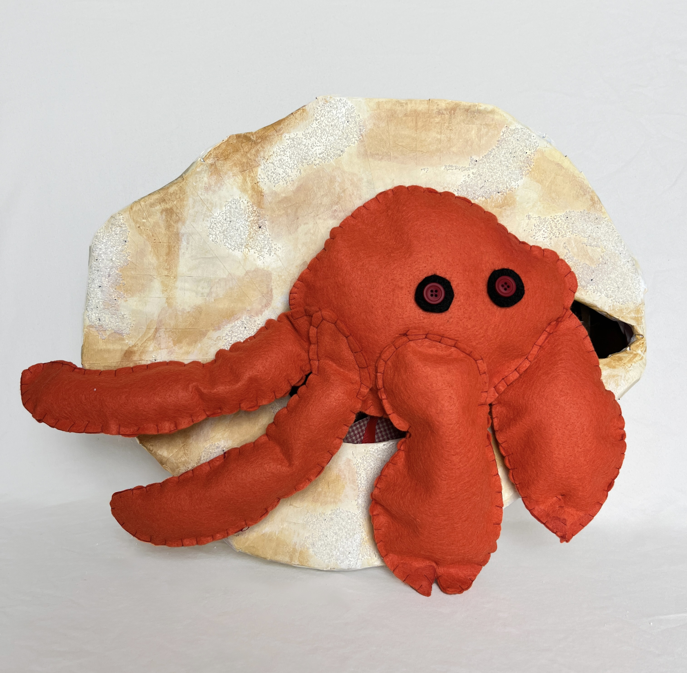

My Work
1

Description of project 1.
2
Description of project 2.
3

Description of project 3.
4

Description of project 4.
5

Created during the GDES Study Abroad trip in 2024, Little Scratch is a project consisting of three zines centered around the graffiti culture in Italy. By collecting photos of graffiti from Florence and pairing them with images of ornate frames sourced from museums and antique collectors, the zines juxtapose modern urban expression with traditional art preservation. The exhibition audience became collaborators, invited to draw and add to the zines with markers and pens, creating an interactive exploration of art and culture. Through this project, I gained insight into the history and preservation of Italian art while experimenting with community guided creative processes.